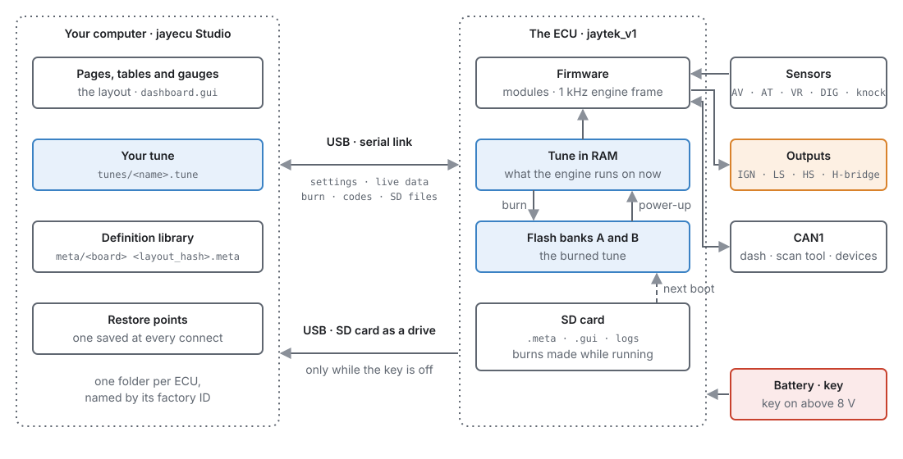
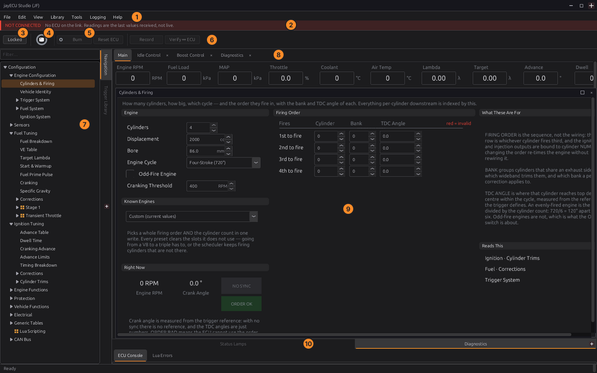
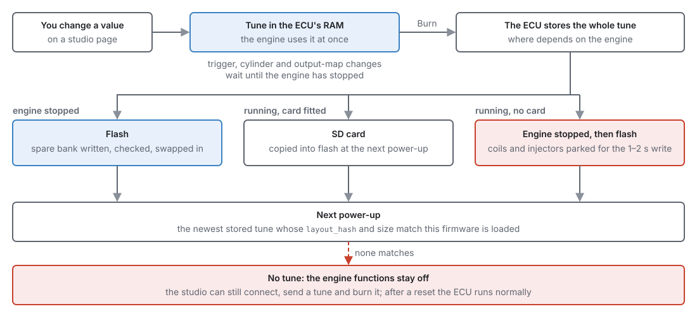
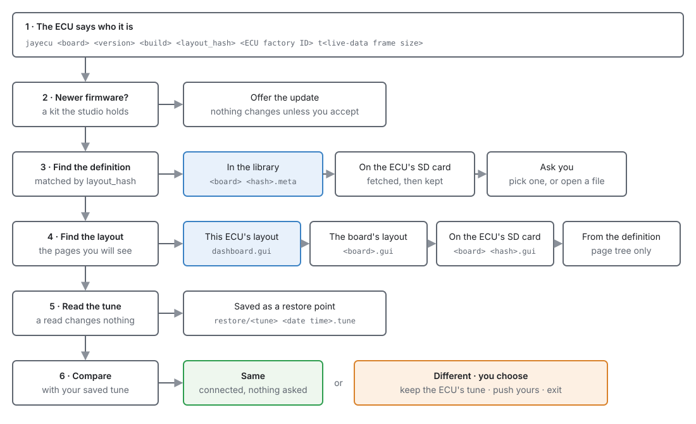
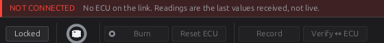

The system at a glance¶
Basic → Advanced
In one sentence: a jayecu system is an ECU running firmware, jayecu Studio on your computer, a definition that tells the studio what the firmware contains, and your own files: the tune and the layout.
Overview¶
Basic
An engine control unit (ECU) reads the engine's sensors, decides how much fuel to inject and when to fire each spark plug, and drives the injectors, coils, valves and relays that make it happen. It does this hundreds of times a second, on its own, whether or not a computer is plugged in.
You set it up and tune it from your computer, with jayecu Studio. The studio shows the ECU's settings as pages of fields, tables and gauges. When you change a value, the studio sends it to the ECU straight away and the engine uses it at once.
Six things work together, and most of what can go wrong between them is one of them not matching another. This chapter explains each one and how they fit, so that the rest of the manual, and the messages the studio shows you, make sense.
| Part | What it is | Where it lives |
|---|---|---|
| The ECU board | The hardware: a microcontroller, input circuits for sensors, drivers for outputs, three connectors | In the vehicle |
| The firmware | The program the ECU runs | In the ECU's flash memory |
| jayecu Studio | The program you tune with | On your computer (Linux or Windows) |
| The definition | A file describing every setting and live value the firmware has | In the studio's library, and on the ECU's SD card |
| Your tune | Every setting value: your calibration | In the ECU, and as a .tune file on your computer |
| Your layout | The pages, tables and gauges the studio shows | A .gui file on your computer |

Concepts¶
Basic → Advanced
The ECU board¶
Basic
The jaytek_v1 board is built around an STM32F767 microcontroller. Everything the engine is wired to arrives on three sealed connectors, each a different colour so they cannot be swapped:
| Connector | Colour | Pins | Carries |
|---|---|---|---|
| CN2 | White | 35 | Ignition outputs and low-side outputs |
| CN3 | Blue | 35 | Sensors: analog inputs, VR (variable-reluctance) inputs, digital inputs |
| CN4 | Black | 23 | Power and grounds, high-side outputs, H-bridge outputs, knock inputs, CAN1 |
On those connectors you have:
| Kind | Count | Used for |
|---|---|---|
| Ignition outputs (IGN) | 12 | Coils |
| Low-side outputs (LS) | 22 | Injectors, solenoids, relays, anything switched to ground |
| High-side outputs (HS) | 8 | Anything switched to battery voltage |
| H-bridge outputs | 2 | Motors that must be driven both ways: an electronic throttle, a motorised wastegate |
| Analog voltage inputs (AV) | 15 | 0–5 V sensors: pressure, throttle position, pedal, wideband controllers |
| Analog temperature inputs (AT) | 4 | Thermistor sensors: coolant, air temperature |
| Digital inputs (DIG) | 8 | Switches, Hall sensors, frequency inputs |
| VR inputs | 2 | Crank and cam sensors: variable-reluctance, or Hall |
| Knock inputs | 2 | Knock sensors |
| CAN bus | 1 (CAN1) | Dashboards, scan tools, other controllers |
The microcontroller has a sixteenth analog input, AV12, wired inside the board to measure battery voltage. It is not on a connector and cannot be assigned to a sensor. Chapter 7 gives the full pinout.
Key on, key off. The ECU decides that the ignition key is on when its battery voltage rises above
8.0 V, and that it is off when the voltage falls to 7.0 V or below. With the key off, even with the USB
cable plugged in and the studio connected, the ECU fires no coil and no injector, raises no
running trouble codes, and its sensor channels read zero. This is what lets you work on a tune at your
desk with the ECU powered from USB alone. The live channel Key On key_on shows which state the ECU
is in.
Other boards
The firmware also builds for the Proteus F7 board. The appendix Proteus F7 board covers its differences. Everything else in this manual applies to both, except where a chapter says otherwise.
The firmware¶
Basic → Intermediate
The firmware is the program in the ECU. It is made of modules, one for each job: Trigger, Fuel, Ignition, Idle, Boost, Launch, Knock and so on. Many modules have an Enabled switch, and one that is switched off does nothing at all. Each module has its own group of settings and its own chapter in Part III.
The heart of the firmware is the engine frame, which runs 1000 times a second. In each frame the
sensors are read into channels (live values such as rpm, map and clt), the modules read
those channels and publish their own (a fuel pulse width, an ignition advance, a boost target), and
the outputs are driven from the result. Injection and spark events are then timed to the exact crank
angle by the trigger decoder, not by the frame.
The firmware reports every channel to the studio as live data, raises trouble codes (DTCs) when it finds a fault, and keeps a table of the codes it has seen. Chapter 44 covers trouble codes.
Every firmware build has a version, and every ECU reports it when the studio connects. The studio shows it in its window title once connected.
jayecu Studio¶
Basic
The studio runs on Linux and Windows. Chapter 3 installs it and chapter 4 tours it; Figure 2.2 names the main areas so that the rest of Part I can refer to them.

- Menu bar. File holds ECUs, tunes and layouts; Library holds definitions, the trigger wheel library and TunerStudio import; Help holds this manual.
- Connection banner. Shown whenever there is no live ECU. Values on screen are then the last ones received, not live.
- Locked / Editing. Locked is for using the pages; Editing is for rearranging them (chapter 49). While Editing, the tune cannot be changed.
- Connect. Finds the ECU on USB and connects to it (chapter 5).
- Burn. Stores the tune permanently in the ECU. Its dot turns amber when there are changes the ECU has not stored yet (see RAM and burn below).
- Verify ↔ ECU. Compares the studio's copy of the tune with the ECU's and sends any difference back.
- Navigation tree. Every page, grouped as the layout arranges them. Type into Filter… above it to find a page by name.
- Surface tabs and gauges. Tabs of gauges and panels you can keep open while you move between pages.
- The page chosen in the tree: its fields, tables and help.
- Docks for status lamps, diagnostics, the ECU console and Lua errors.
You can use the studio with no ECU attached. File ▸ Open ECU… opens the folder of an ECU the studio has met before, with its tune and layout, and you can change values offline. Those changes live only in the tune file until you next connect; the studio then shows you what differs and asks what to do (see Procedure below).
Advanced — other ECUs
The studio can also connect to ECUs that speak the TunerStudio protocol, from a TunerStudio .ini
file brought in with Library ▸ Import TunerStudio .ini…. This manual covers jayecu ECUs; the
parts of the studio that describe the ECU (pages, tunes, the burn) work the same way for both.
The definition¶
Intermediate
The studio has no built-in knowledge of what the firmware contains. It learns it from the definition: a file, made at the same time as the firmware, that lists:
- every setting: its label, units, range, default, help text and where it sits in the ECU's memory;
- every table and its axes;
- every live channel and where it sits in the live-data frame;
- the trouble codes, the trigger wheels the firmware can decode, the Lua functions it offers, and the navigation tree it suggests for its pages.
Because the definition comes with the firmware, a new firmware release can add a setting or a page and the studio shows it without being updated itself. The reverse also holds: the studio can only show an ECU correctly with that firmware's own definition.
A definition is stored under the name <board> <layout_hash>.meta, for example
jaytek_v1 cb58c0dc.meta. The studio keeps the ones it has met in its definition library. They
reach the library in three ways:
- With a firmware kit. The studio carries the firmware it can install, each build as a kit with its definition and layout. It copies every kit's definition into the library when it starts.
- From the ECU's SD card. Installing firmware also writes its definition to the ECU's SD card. A studio that has never seen that firmware fetches the definition from the card when it connects.
- From the firmware's release. A studio that meets firmware it has neither in its library nor on the ECU's card downloads that version's definition and layout from the release that shipped it, checked against the release's checksums. This is how a new laptop reads an ECU still on older firmware; it needs an internet connection the first time.
- By hand. Library ▸ Load ECU Definition… adds a definition file you have been given.
A definition also names the oldest studio that can read it, and the format it is written in. If your studio is older than the first, or does not know the second, it says a newer studio is needed and disconnects rather than guess. A layout shipped with the firmware names the studio it needs too; an older studio still opens it, but says some parts may not show.
The layout hash: how the studio matches an ECU to its definition¶
Intermediate → Advanced
Every firmware build carries a layout hash: an eight-character code such as cb58c0dc, computed
from where every setting and live channel sits in memory. Two builds that store their settings the same
way have the same layout hash, even if one has better help text. Two builds that store them
differently, even by one byte, have different ones.
The layout hash is what makes a stored tune safe to use:
- The studio reads it from the ECU when it connects, and loads only the definition with the same hash. A definition for a different layout would put every value in the wrong place.
- The ECU stores it with every burned tune, and at power-up it loads only a tune whose hash and size match the firmware it is running. A tune burned by different firmware is ignored rather than read into the wrong places.
When the studio connects, the ECU identifies itself with one line of text:
jayecu jaytek_v1 0.4.0 84f5a20 cb58c0dc <24-character ECU ID> t992
In order: the product, the board, the firmware version, the build, the layout hash, the ECU's own factory ID (unique to that microcontroller, and how the studio tells your ECUs apart), and the size of the live-data frame in bytes. If the frame size does not match the definition's, the studio warns you in the status bar: the live values would be decoded from the wrong places.
Advanced — what changes the layout hash
Adding, removing, moving or resizing a setting, a table or a live channel changes it. So does a change to the list of signals a selector can point at, because a selector setting stores a position in that list. Changing a label, a unit, a range, a default or help text does not.
Tunes¶
Intermediate
Your tune is the value of every setting and every table cell: the calibration of your engine. It exists in two places:
- In the ECU, where the engine uses it.
- On your computer, as a
.tunefile. The studio keeps it in step with the ECU while you work, so that you have a copy that does not depend on the ECU.
A .tune file is a readable text file (JSON) in which every value is stored under its path, not
by its position in memory. Settings that point at something, such as a sensor's input pin or the
signal a switch reads, are stored by name. The file also records the layout hash it was saved with.
That is what lets a tune outlive the firmware it was made on. When a .tune file is loaded against a
different definition, each value finds its setting by path. The studio then tells you how many values
it kept, how many new settings were left at their defaults, and which values it dropped
because the new firmware no longer has that setting. A reference to a pin or signal that no longer
exists is reported by name and left at its default, rather than pointed somewhere else.
The studio saves the tune file when you use File ▸ Save Tune (Ctrl+S), and on
its own when you disconnect, open another tune or ECU, or quit. A new ECU's tune is called current
until you name it.
Restore points. Every time the studio connects, it saves the tune it reads from the ECU, before anything is changed, as a restore point named after your tune and the date and time. Edit ▸ Restore Tune to Connect Point puts the as-connected tune back, and File ▸ Open Tune… lists the restore points beside your tunes. A restore point is an exact copy of that firmware's memory, so it can only be loaded into an ECU running the same layout.
Layouts¶
Basic
The layout decides what you see: the navigation tree, each page's fields and tables, and the
gauges on the surface tabs. It is a .gui file, and each ECU has its own, called dashboard.gui.
The first time the studio meets an ECU, it takes the layout that ships for that board. Chapter 49 explains how to change it. The studio does not save the layout on its own. Use File ▸ Save Layout (Ctrl+Shift+S), or answer the prompt when you close.
The tune and the layout are separate on purpose: the same tune can be shown through different layouts, and a layout can be shared between ECUs of the same board.
Your files on disk¶
Intermediate
The studio keeps everything in one folder:
- Linux:
~/.local/share/jayecu/jayecu Studio/ - Windows:
%APPDATA%\jayecu\jayecu Studio\
jayecu Studio/
├── ecus/
│ └── <ECU ID>/ one folder per ECU, named by its factory ID
│ ├── ecu.json board, last port, last tune used
│ ├── dashboard.gui this ECU's layout
│ ├── tunes/
│ │ └── current.tune your tunes
│ └── restore/
│ └── current 2026-09-25 14.02.tune restore points
├── meta/ the definition library
│ └── jaytek_v1 cb58c0dc.meta
├── dashboards/ layouts, one per firmware layout
│ └── jaytek_v1 cb58c0dc.gui
└── firmware/ firmware kits the studio has downloaded
Chapter 48 covers backing these files up and moving them to another computer.
RAM and burn¶
Basic → Advanced
The ECU holds its tune in two kinds of memory:
- RAM, which the engine runs from. It is fast, and every change you make in the studio goes there at once, but it is lost when the ECU loses power.
- Flash, which keeps the tune with the power off. Writing to it is called a burn.
So a change is live the moment you make it, and permanent only once you burn it. The ECU
publishes Unburned Changes config_dirty while its RAM holds anything flash does not, and the
studio shows this on the Burn button: an amber dot and edge while there is something to burn,
a brief green dot once a burn has landed, and a dim outline when there is nothing to burn.

Where a burn goes. A burn always stores the whole tune, but where it goes depends on the engine:
- Engine stopped: straight to flash. The ECU keeps two flash copies (banks A and B). It writes the spare one, checks it, and only then makes it the active one, so a power cut during a burn leaves the previous tune intact.
- Engine running, SD card fitted: to the SD card. Writing the card does not disturb the engine. At the next power-up the ECU copies the tune from the card into flash.
- Engine running, no SD card: writing internal flash stops the processor for about 1–2 seconds, and no spark or injection can be timed while it is stopped. So the ECU stops the engine first, parking every coil and injector output safely, and then writes flash.
Burning with the engine running and no SD card stops the engine
Without an SD card, a burn while the engine is running cuts spark and fuel before it writes. On the road that is an engine that dies without warning. Fit an SD card if you tune while driving, or burn only with the engine stopped.
A burn takes a moment to land after you press Burn: the ECU acknowledges the request at once and writes within the next couple of seconds. The Burn button does not turn green until the ECU reports the tune stored. Do not remove power before then.
At power-up the ECU looks at both flash banks and the SD card and loads the most recent tune whose layout hash and size match its firmware. If none matches (a new board, or firmware whose layout differs from every stored tune) it starts with no tune. It still talks to the studio and still reads the battery, so you can send a tune and burn it, but it will not run the engine until it is reset with a valid tune stored. The studio shows a red NO TUNE ON THE ECU strip while this is so.
Changes that wait for the engine to stop. Most changes, including every table and trim, take effect in the next engine frame. A few would be dangerous to apply to a spinning engine: the trigger setup, the cylinder count and firing layout, and which outputs fire which coils and injectors. The ECU takes those into RAM at once but applies them only once the engine has stopped.
The USB link¶
Intermediate → Advanced
The ECU connects to your computer with one USB cable, and appears as two devices at once:
- A serial port (on Linux
/dev/ttyACM…, on Windows a COM port). The studio talks to the ECU over it. - A removable drive: the ECU's SD card. It is present only while the ECU is not using the card (see The SD card).
The studio talks to the ECU only over USB. The ECU never sends anything the studio has not asked for: the studio asks, and the ECU answers. When you press Connect, the studio asks each USB serial port on your computer to identify itself, and connects to the ones that answer as jayecu ECUs.
Advanced — the protocol
Every message is a frame: two sync bytes AA 55, a type byte, a reserved byte, the total length
(16-bit), a millisecond timestamp (64-bit), a sequence number that the reply echoes (16-bit), the
payload, and a CRC-16/CCITT over everything before it. All numbers are little-endian. A frame
carries at most one 1 KB block of settings, so a whole tune is read and written a block at a
time.
| Request | Byte | Does |
|---|---|---|
| Identity | Q |
The identity line above |
| Live data | A |
One whole live-data frame |
| Read / write settings | r / w |
A range of the tune in RAM, by offset |
| Burn | b |
Store the tune (see RAM and burn) |
| Console | E |
Run a text command |
| Trouble codes | G |
The stored trouble-code table, a page at a time |
| SD card | 0x20–0x25 |
Take or release the card, read and write files on it |
| Captures | 0x26–0x28 |
Engine-cycle capture, trigger log, knock scope |
| Clock | 0x29 |
Read or set the ECU's real-time clock |
The studio also sets the ECU's clock from your computer's clock when it connects, so that files the ECU writes to its SD card carry the right date. The jaytek_v1 has a clock battery and a 32.768 kHz clock crystal, so its clock keeps time with the power off; the studio's setting just keeps it right. A board without a battery restarts its clock from a fixed date every time it loses power, and until a studio connects, its files carry that date.
The SD card¶
Intermediate
The ECU has an SD card slot. Only one side can use the card at a time, and the key decides which:
| Key | Who has the card | What you see |
|---|---|---|
| Off | Your computer | The card appears as a USB drive |
| On | The ECU | The drive disappears from your computer |
Neither side is cut off in the middle of a write: when the key turns off the ECU finishes and closes its files first, and when the key turns on it waits for your computer to finish writing. The studio can also borrow the card over the serial link, with the key on or off, to read or write a file.
The ECU uses the card for:
- The definition and layout of its firmware,
<board> <layout_hash>.metaand<board> <layout_hash>.gui, so that any studio can fetch them; - burns made with the engine running (see RAM and burn);
- onboard datalogs (chapter 42);
- learned values, such as long-term fuel trims, and its trouble-code history.
The ECU runs without a card. It then cannot keep a burn made with the engine running without stopping the engine, and it cannot hand a studio that has never seen its firmware the definition it needs.
CAN bus¶
Intermediate
CAN is the two-wire network most modern vehicles use to connect their controllers. The ECU has two CAN controllers; on the jaytek_v1, CAN1 is on the black connector CN4 (CAN H pin 10, CAN L pin 17). On it the ECU can:
- answer an OBD-II scan tool: live data, stored trouble codes, clearing codes, and vehicle information such as the VIN;
- send and receive your own frames, which you define in the tune: for a dashboard, another controller, or a sensor that reports over CAN. The studio has templates for common devices;
- send and receive frames from a Lua script.
The studio does not connect over CAN; it always uses USB. Chapters 13 and 33 cover CAN wiring and configuration.
OBD-II answers on CAN2 by default
OBD-II Bus can.obd_bus defaults to CAN2, and the jaytek_v1 brings only CAN1 out to a
connector. If you wire a scan tool to CN4, set OBD-II Bus to CAN1 or the scan tool gets no
answer.
Procedure¶
Basic → Intermediate
What happens when you connect¶
Basic → Intermediate
You press Connect, and the studio works through these steps. Most of them happen without asking you anything; the status bar reports each one. Chapter 5 walks through a first connection on screen.

- The ECU identifies itself with its board, firmware version, layout hash and factory ID. The studio opens that ECU's folder, creating it the first time.
- Newer firmware? If the studio holds a firmware kit newer than the ECU's firmware, it offers it. Nothing is changed unless you accept; chapter 46 covers the update.
- The definition is found by layout hash: in the library first, then on the ECU's SD card, then in the release of the firmware the ECU runs (each kept in the library once found), and if none has it, the studio asks you to pick one or open a file.
- The layout is this ECU's own
dashboard.guiif it has one; otherwise the one drawn for its firmware, found the same way (library, SD card, release); failing those, the newest layout the studio has, which says on connect what it cannot find; and failing even that, a page tree built from the definition. - The tune is read from the ECU. Reading changes nothing. The studio saves what it read as a restore point.
-
The tune is compared with the one saved on your computer. If they match, you are connected. If they differ, the studio shows you every page that differs, with both values side by side, and asks:
- Keep the ECU's tune: your saved tune is updated to match the ECU.
- Push tune to the ECU: your saved tune is written into the ECU's RAM. Burn it to keep it.
- Exit - no changes: the studio disconnects and nothing is written anywhere.
If the ECU has no tune at all (a new board, or a firmware update that did not put the tune back), there is nothing to compare. The studio asks "This ECU has no tune" instead and offers your saved tune or the firmware's default tune (chapter 47, section 2).
A difference means the ECU was changed somewhere else
The studio keeps your tune file in step with the ECU while you work, so the two normally match. A difference at connect means the ECU was changed where this studio could not see it: another computer or another tuner. The dialog says when the ECU holds nothing but the firmware's defaults. Read the differences before you choose; one choice overwrites the ECU and the other overwrites your file.
Making a change permanent¶
Basic

- Make your change on a page. The engine uses it at once, and the dot on Burn turns amber.
- Check the result on the gauges or in a log. If it is wrong, change it back; nothing is stored yet.
- Press Burn. Wait until the dot turns green. If no SD card is fitted, burn only with the engine stopped (see the Danger box above).
- Save the tune file with File ▸ Save Tune if you want a copy on your computer now. The studio also saves it when you disconnect.
Reset ECU waits for a burn
Reset ECU waits up to 4 seconds for unburned changes to be stored before it restarts the ECU, so pressing Burn and then Reset ECU at once does not lose the burn. Anything still not stored after 4 seconds is lost.
Examples¶
Intermediate
Example 1 — a new ECU on a new computer
You install the studio on a laptop that has never seen your ECU, and connect.
- The ECU answers
jayecu jaytek_v1 0.4.0 … cb58c0dc …. - The library has
jaytek_v1 cb58c0dc.meta, because this studio shipped with that firmware kit. If it did not, the studio fetches the definition from the ECU's SD card, showing a progress window while it does. - The ECU has no folder yet, so the studio creates one and takes the board's shipped layout.
- There is no saved tune on this laptop, so there is nothing to compare: the studio takes the
ECU's tune as
current, and saves it to a file when you save or disconnect.
Nothing was written to the ECU.
Example 2 — tuning at your desk, then connecting
Last night you opened the ECU with File ▸ Open ECU… and changed the warm-up table with no ECU attached. Today you connect in the car.
- The ECU's tune no longer matches your file, so the studio shows the warm-up table's page with the ECU's values and yours side by side.
- You choose Push current to the ECU. Your table is now in the ECU's RAM and the engine uses it.
- The Burn dot is amber. You start the engine, check the warm-up, stop it, and press Burn.
Example 3 — firmware that moves the layout
A firmware update adds a setting, so the layout hash changes from cb58c0dc to a new value.
- The ECU, after the update, ignores the tune burned by the old firmware, because its layout hash no longer matches.
- The studio's update carries your tune across by path: it reads the tune with the old definition, matches every value to the new one, shows you what the new firmware adds and drops, writes the result, and burns it. Chapter 46 describes this step by step.
Pitfalls and troubleshooting¶
Basic → Advanced
| Symptom | Likely cause | Check |
|---|---|---|
| Changes are gone after the ECU was switched off | They were never burned, or power was removed before the burn landed | Watch the Burn dot: burn, and wait for green |
| The engine died the moment you pressed Burn | Engine running with no SD card: the ECU stops the engine before writing flash | Fit an SD card, or burn with the engine stopped |
| A trigger, cylinder or output change has no effect | Those apply only once the engine has stopped | Stop the engine; the change applies then |
| "No schema for this ECU" or a request to choose a definition | The library has no definition for this layout hash and the ECU's SD card does not either | Load the definition that came with the firmware (Library ▸ Load ECU Definition…), or reinstall the firmware from the studio so it is written to the card |
| "Telemetry mismatch" in the status bar | The definition was built for a different firmware build with the same layout hash | Reinstall the firmware and definition together (chapter 46) |
| The ECU connects but runs nothing, with every value at zero | Key off: the ECU is powered from USB only | Turn the key on; watch Key On key_on |
| Red NO TUNE ON THE ECU strip; the engine will not run | No stored tune matches the firmware (after new firmware, or on a new board) | Answer the "This ECU has no tune" question, burn, and press Reset ECU (chapter 47) |
| The SD card does not show up on your computer | The key is on, so the ECU has the card | Turn the key off |
| On connect the studio says the ECU is at its defaults | The ECU holds exactly the firmware's default tune: someone put it there, or it was set up from new and never changed | Push your tune to the ECU, then Burn |
| A scan tool on CN4 gets no answer | OBD-II is answering on CAN2 | Set OBD-II Bus to CAN1 |
Related¶
- Chapter 3 — Installing jayecu Studio
- Chapter 5 — First connection
- Chapter 7 — The jaytek_v1 board: the full pinout
- Chapter 42 — Datalogging and analysis: onboard logging to the SD card
- Chapter 46 — Updating firmware
- Chapter 48 — Tunes, layouts and backups
- Chapter 49 — Customising the studio